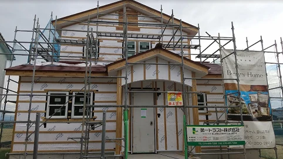
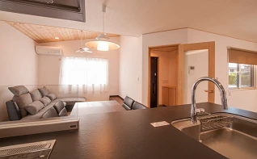
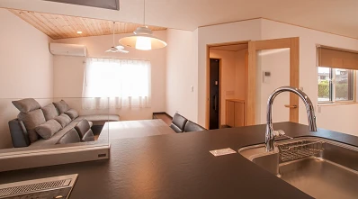

現場の職人にインタビュー②
こんにちは。富山で自然素材にこだわるホンモノの家、フジ創アイノスです。 前回に続き、現場の職人さんへのインタビューです。 電気工事をしている影山さんにお話を聞きました。 Q「仕事で気を付けていることは？」 影山さん「配線
続きを読む →FUJISOU AINOS JOURNAL
家づくりのこと、暮らしのこと。
日々の想いを、お伝えします。
新しい記事から 20・40ページ
こんにちは。富山で自然素材にこだわるホンモノの家、フジ創アイノスです。 前回に続き、現場の職人さんへのインタビューです。 電気工事をしている影山さんにお話を聞きました。 Q「仕事で気を付けていることは？」 影山さん「配線
続きを読む →
こんにちは。富山で自然素材にこだわるホンモノの家、フジ創アイノスです。 今回は富山市の建築現場にお邪魔してきました。 シンプル＆合理的で人気の平屋のお家です。 いつも現場の中心になってくれている大工の松本さんを発見。 ち
続きを読む →
こんにちは。富山で自然素材にこだわるホンモノの家、フジ創アイノスです。 土曜日、日曜日は高岡市内免でモデルハウスの見学会を開催します！ アイノスの家づくりのポイントをご紹介します。 ◆自然素材 「無垢の床材」「漆喰塗の壁
続きを読む →
こんにちは。富山で自然素材にこだわるホンモノの家、フジ創アイノスです。 今日は秋分の日。ずっと暑い日が続いていましたが少しずつ秋の空気になってきましたね。 さて今回は、家が住む人の身体に及ぼす影響についてのお話です。 「
続きを読む →
こんにちは。富山で自然素材にこだわるホンモノの家、フジ創アイノスです。 フジ創アイノスの家づくりは、お客様のご希望に合わせた３つのスタイルを提案しています。 アイノスのおうち 自然素材のナチュラルな家。 無垢材、しっくい
続きを読む →
こんにちは。富山で自然素材にこだわるホンモノの家、フジ創アイノスです。 今日は中秋の名月ですが、日中は夏の様に暑かったですね。 皆様体調管理に気を付けてください。 さて、今日は建設中のアイノスの家にお邪魔してきました。
続きを読む →
こんにちは。富山で自然素材にこだわるホンモノの家、フジ創アイノスです。 『平屋』といえば、"広い敷地が必要"というイメージがあると思います。 50坪や60坪では足りないんじゃないか？と普通は考えてしまうでしょう。 不動産
続きを読む →
こんにちは。富山で自然素材にこだわるホンモノの家、フジ創アイノスです。 『平屋』には多くの魅力やメリットがありますが、"高い"というイメージを持っている方が多いです。 住宅会社に行っても、"平屋は高いですよ"と言われるこ
続きを読む →
こんにちは。富山で自然素材にこだわるホンモノの家、フジ創アイノスです。 2階建ての家で注意が必要なことは、こまめに片付けをするようにしないと、暮らしの中心となるリビングダイニングがいつも散らかった状態になりやすいことです
続きを読む →
こんにちは。富山で自然素材にこだわるホンモノの家、フジ創アイノスです。 『自然素材の家』と聞くと、「高い」というイメージをお持ちの方が多いのではないでしょうか。 実はクオリティが同じ『自然素材の家』でも、建てる会社によっ
続きを読む →
こんにちは。富山で自然素材にこだわるホンモノの家、フジ創アイノスです。 戸建住宅のほとんどは木造で建てられています。 森で育った木材が伐り出されて、住宅の構造材となります。 自然が生み出した木材は、実は住宅の構造用の材料
続きを読む →
こんにちは。富山で自然素材にこだわるホンモノの家、フジ創アイノスです。 ✔大事なのは、コストを上げずに解決すること 2階建ての家のリビングが散らかりやすくなる問題を解決する手段として、1階に「和室」をつくるという選択肢が
続きを読む →こんにちは。富山で自然素材にこだわるホンモノの家、フジ創アイノスです。 一般的に多くの方が、敷地の大小に関係なく2階建て住宅を建てます。 その理由は、「平屋が高い」という思い込みがあること、また、住宅会社もそう思っている
続きを読む →こんにちは。富山で自然素材にこだわるホンモノの家、フジ創アイノスです。 ✔秘訣は洗濯干場をどこにつくるか 洗濯作業の時間と手間、煩わしさを軽減する一番の秘訣は『平屋』にすることなのですが、その際に考えなければいけないこと
続きを読む →こんにちは。富山で自然素材にこだわるホンモノの家、フジ創アイノスです。 洗濯にかかる時間や手間を減らすためには、 干す → 取り込む → 片付ける という一連の動作に伴う移動距離を出来るだけ減らさなければいけません。 し
続きを読む →こんにちは。富山で自然素材にこだわるホンモノの家、フジ創アイノスです。 60歳を超えた方には、住宅会社は当たり前のように2階建てではなく平屋をすすめます。 他方、3０代の方には住宅会社は当たり前のように平屋ではなく2階建
続きを読む →
こんにちは。富山で自然素材にこだわるホンモノの家、フジ創アイノスです。 前回の続きで、キッチンまわりを綺麗に保てる工夫をお伝えします。 ✔工夫その1：そもそも置けなくする このカウンターをつくらないとなれば、フルフラット
続きを読む →
こんにちは。富山で自然素材にこだわるホンモノの家、フジ創アイノスです。 現在は、対面式のキッチンで、かつキッチンと居間を分離しない広々としたリビングダイニングキッチンが家づくりの主流となっています。 その理由の1つが、い
続きを読む →こんにちは。富山で自然素材にこだわるホンモノの家、フジ創アイノスです。 『省エネルギー住宅』と聞くと、大幅に電気料金が抑えられそうなイメージがありませんか？ 省エネルギー住宅は快適なお家ではありますが、大幅に電気料金が下
続きを読む →
こんにちは。富山で自然素材にこだわるホンモノの家、フジ創アイノスです。 前回の続きで、下の図の日当たりのいい土地、悪い土地について考えていきます。 北、東、西に道路が接している土地は、なんだか日当たりが悪そうな気がします
続きを読む →こんにちは。富山で自然素材にこだわるホンモノの家、フジ創アイノスです。 土地探しを始めるとき、土地に求める条件はなんでしょうか？ 子供が通う学校区であること 利便性が高い場所であること 庭がつくれるぐらいの広々した土地で
続きを読む →
こんにちは。富山で自然素材にこだわるホンモノの家、フジ創アイノスです。 前回に引き続き、家を建てる時にかかる経費についてお話しします。 ▼火災保険・地震保険 火災保険は、保険会社によって条件も費用も違います。 そして、家
続きを読む →こんにちは。富山で自然素材にこだわるホンモノの家、フジ創アイノスです。 今回は、家を建てる際に、土地や建物以外にかかる必要経費についてお話しします。 住宅ローンの商品選びが出来、毎月の返済金額と返済年数が決まれば、銀行か
続きを読む →こんにちは。富山で自然素材にこだわるホンモノの家、フジ創アイノスです。 住まいと健康は非常に深い関係があります。 健康には「室内の空気環境」が大切です。 空気を決める要素は、温度、湿度、清潔さです。 1.温度 室内・室間
続きを読む →